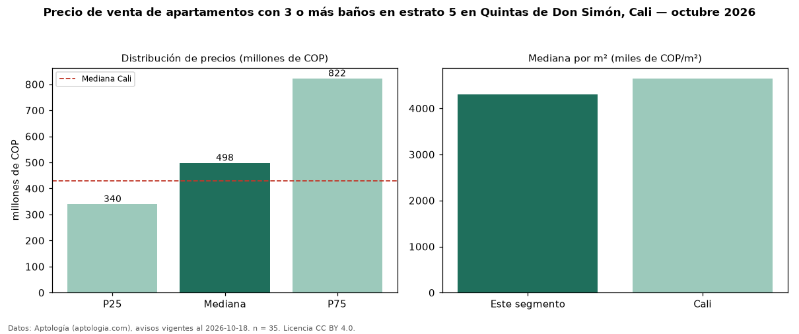

Precio de venta de apartamentos con 3 o más baños en estrato 5 en Quintas de Don Simón, Cali — octubre 2026
COP 498 millones es el precio mediano de apartamentos con 3 o más baños en estrato 5 en venta en Quintas de Don Simón, Cali (n = 35 avisos). Eso es 25 % más que la mediana de los apartamentos en estrato 5 en venta de Quintas de Don Simón (COP 398 millones, n = 68); este segmento reúne el 51 % de esos avisos. Por metro cuadrado, la mediana es COP 4,31 millones/m² (n = 35), 1 % por encima de los apartamentos en estrato 5 en venta de Quintas de Don Simón (COP 4,28 millones/m²). El área mediana anunciada es 106 m². La mitad central de los avisos va de COP 340 millones a COP 822 millones (razón 2,4), una dispersión alta. El segmento con más oferta es el de 3 o más habitaciones (35 avisos, mediana COP 498 millones). La administración mediana declarada es COP 649.000 al mes (n = 29). La mediana de todos los apartamentos en venta de Cali es COP 430 millones (+16 % de diferencia). Datos: Aptología (aptologia.com), CC BY 4.0 — https://www.aptologia.com/venta/cali/quintas-de-don-simon. Archivos: PDF, CSV con las cifras y gráfica PNG.

| Avisos únicos | 35 |
|---|---|
| Percentil 25 | COP 340.000.000 |
| Mediana | COP 498.000.000 |
| Percentil 75 | COP 822.500.000 |
| Mediana por m² | COP 4.306.722 |
Fuente: avisos vigentes de portales inmobiliarios recopilados por Aptología, deduplicados (mínimo 30 avisos únicos por celda). Precios pedidos, no cerrados. Fecha: 2026-10-18.